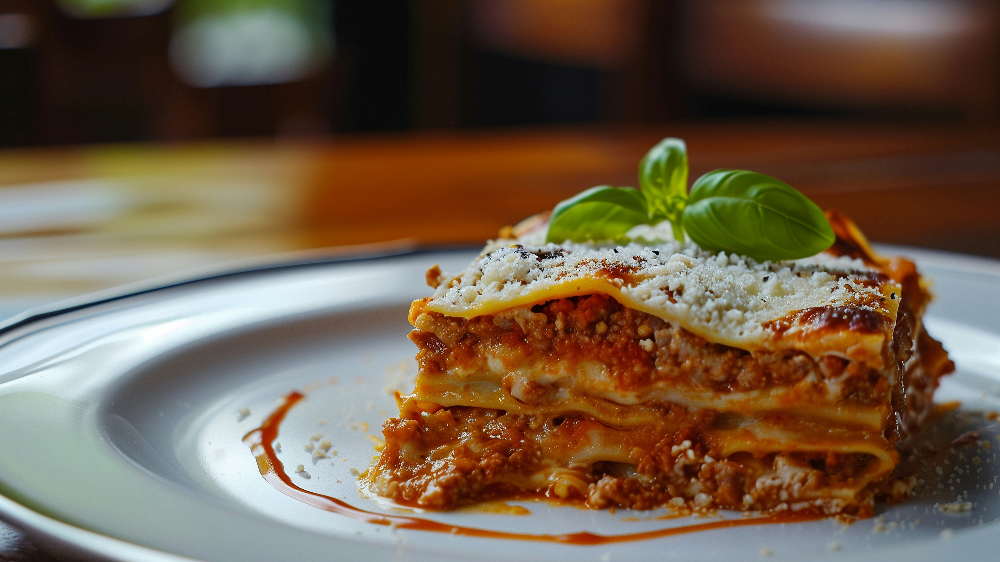

Foto von Emanuel Ekström auf Unsplash
Ingredients:
- 12 lasagna pasta sheets
- 500 g ground beef (or half beef, half pork)
- 1 medium onion, finely chopped
- 1 carrot, finely diced
- 1 celery stalk, finely diced
- 2 cloves garlic, minced
- 700 ml tomato passata (crushed/pureed tomatoes)
- 2 tbsp tomato paste
- 2 tbsp olive oil
- 50 g butter
- 50 g all-purpose flour
- 600 ml whole milk, warmed
- 100 g Parmigiano-Reggiano, freshly grated
- 150 g mozzarella, shredded or diced
- Pinch of nutmeg, salt, black pepper, and dried oregano
Steps:
- Heat olive oil in a large pot over medium heat. Sauté the onion, carrot, and celery for 5–6 minutes until softened, then add the garlic for 1 minute.
- Add the ground meat and cook until browned, breaking it apart with a wooden spoon. Stir in the tomato paste, passata, oregano, salt, and pepper. Simmer gently on low heat for 25–30 minutes until thick.
- Meanwhile, make the béchamel: melt the butter in a saucepan over medium heat, whisk in the flour, and cook for 1–2 minutes. Slowly pour in the warm milk while whisking constantly until smooth and thickened. Season with salt, pepper, and a pinch of nutmeg.
- Preheat the oven to 190°C (375°F). Spread a thin layer of meat sauce on the bottom of a baking dish.
- Layer pasta sheets, meat sauce, béchamel, and a sprinkle of Parmigiano-Reggiano. Repeat until ingredients are used, finishing with béchamel, mozzarella, and Parmigiano on top.
- Cover with foil and bake for 25 minutes. Remove the foil and bake another 15–20 minutes until golden and bubbling. Let rest for 10 minutes before slicing.